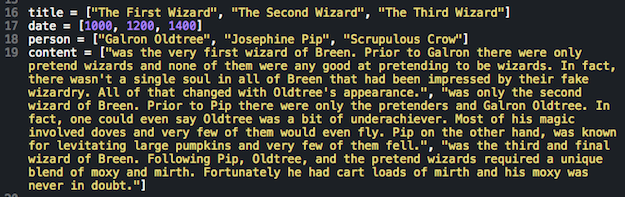
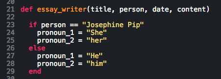
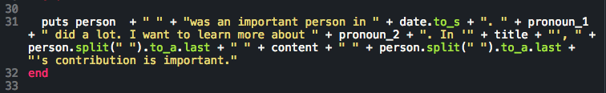
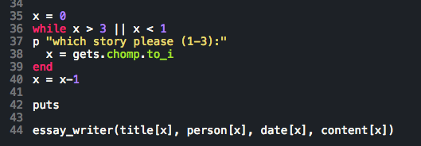
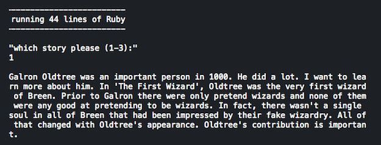
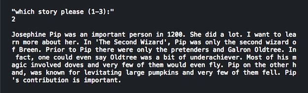
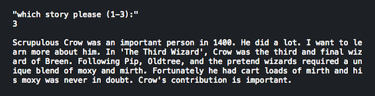

Week 4 bonus challenge
October 5, 2015 -- Make a homework cheater
Automatic essay writer
This week's bonus challenge was to make a homework cheater - a short program in Ruby that compiles three different essays on demand. The catch is that our automatic essay writer must do this by:
- Selecting story elements from different variables holding; titles, dates, people's names, and essay content
- Inserting specific phrases such as "(person) was an important person" and "I want to learn more about (topic)"
- Inserting proper pronouns wherever possible (she/he/his/hers)
- Using the person's last name once they have been introduced
Requirements were a bit vague
Not unlike a real job, this week's bonus assignment left room for a few assumptions. Since we spent the week learning about arrays and hashes I decided to throw almost everything into a few arrays (title, date, person, and content).
I also decided to ask the user to choose 1 of 3 stories. Other options would have been (a) to compile all 3 stories in sequence, (b) compile 1 of 3 stories at random, or (c) compile all 3 stories at random.
Next, I decided to write about 1 woman and 2 men so I could have the program choose pronouns based on who the essay was about. Our instructions hinted that we may 'want to try creating an object' for this, but I felt for the first run, I would use a simple IF statement.
Most importantly, I decided that all 3 essays would be about wizards.
Code breakdown
1. I started things off by assigning story elements to my 4 arrays:

2. Next I define a method called "essay writer" that accepts 4 arguments and starts off with a simple IF/ELSE statement to determine the pronouns for our story based on the character's name:

3. The following puts statement is where all of the action happens. It creates the first sentence of our essay by starting off with the person's name (variable), adding a few words, converting and inseerting the date as a string, then adding a period. The next two sentences combine our pronouns (variables), with a few more words. After that, we put the story's title in quotes and list the person's last name (stripped variable) before adding the content of our essay and concluding with a statement that our character's 'contribution is important.'

4. Our last bit of code is actually where things start off when this is run. It asks the user to select 1 of 3 stories and only allows input between 1 and 3. After that it simply calls and passes 4 arguments (user-selected: title, person, date and content) into the method 'essay_writer'.

Did I mention there are wizards?
Yep. When you run this code you can select and see 1 of 3 stories about different wizards. Here's what it looks like in action:



What did I learn?
I'm sure the author of this challenge intended for us to build something with more complex logic than what I came up with, but I still had fun working on this exercise. If I ever revise this, my plan is to make the logic more sophisticated. For example, I would definitely like to eliminate ALL names and pronouns from my content array and include each one logically vs. having some that are still predetermined.